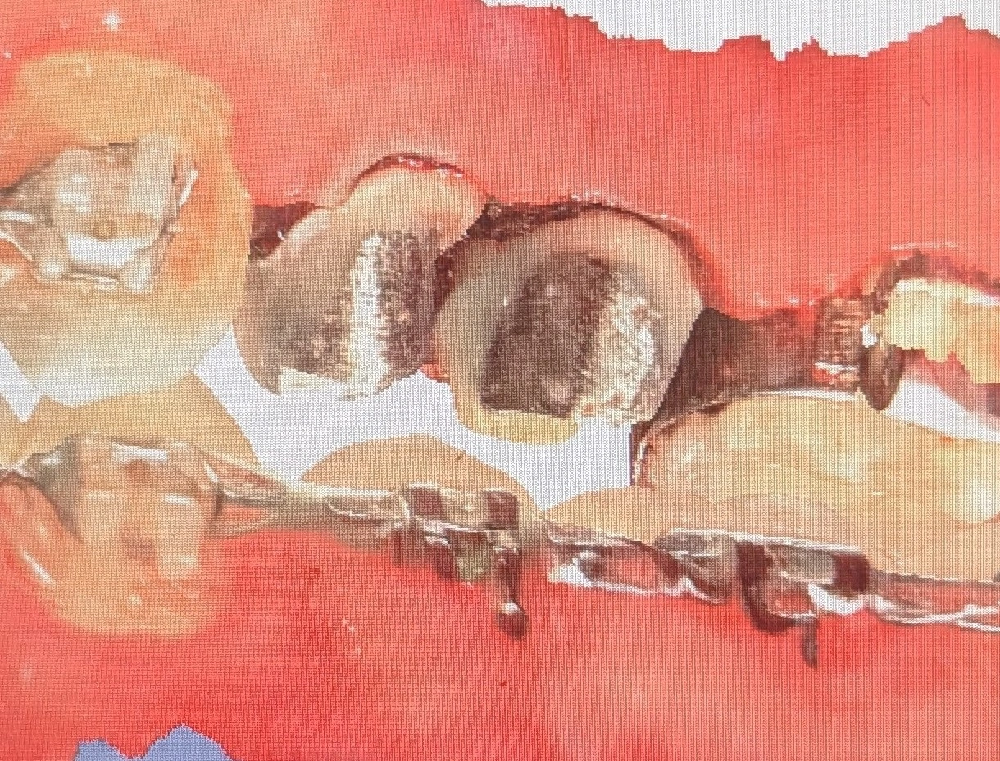

Insight 42 — A Crown on a Tooth Under Orthodontic Treatment: When the Order of Treatment Determines the Material Choice
Published:
Last reviewed:
فارسی

Clinical explanation
A crown in the middle of orthodontic treatment: a multilayered decision, not a simple choice
- When a patient is under orthodontic treatment and, midway through, needs a crown, the decision is no longer merely a prosthetic choice. Here the crown enters an active treatment ecosystem; an ecosystem in which forces, bonding, color, and time are all changing.
- The first layer to think about is the substrate and the bondability of the bracket. If a bracket is to be cemented onto the crown, the crown material must be chosen so that etching, silanation, and bonding on it are reliable. In these conditions, feldspathic porcelain, because of the significant glass phase in its structure and its good response to hydrofluoric acid and silane, has a high preference over monolithic zirconia. Zirconia, because of its polycrystalline nature and the absence of a glass phase, does not respond meaningfully to hydrofluoric acid etching, and bonding on it does not reach the same reliability as porcelain — and this means a higher risk of repeated debonding during the orthodontic treatment.
- The next layer is accepting the fact that the crown will not remain untouched. Cementing a bracket onto the crown means the crown enters a cycle of etching, bonding, debonding, cleaning the remaining resin, and finally polishing. Each of these steps changes the crown surface — however slightly. The patient must know in advance that, at the end of the orthodontic treatment, their crown is not exactly the same crown that was placed at the start.
- For this reason, in many cases the clinical preference is for the provisional crown to be maintained during the orthodontic treatment and the definitive crown to be deferred until after the orthodontics is finished. Of course, this choice is not without tension; the orthodontist may not agree with a provisional crown, because provisionals, under orthodontic forces — which are continuous and directional forces — are prone to repeated detachment. This means that each detachment is an interruption in treatment and a risk for the underlying tooth.
- The third layer is color. Teeth that are under brackets, bonding composite, and etched resins are exposed to hidden stains and color changes that cannot be precisely evaluated during the orthodontic treatment. If the definitive crown is made at this stage, the shade selection is made based on a reference that is not yet in its final state.
- After the orthodontics is finished, polishing the adjacent teeth and removing the stains may completely change the final coloration — and a crown that once looked harmonious may now look unharmonious. For this reason, in these conditions, a provisional crown is not an incomplete solution but a strategic choice. The provisional crown provides the time needed for the orthodontic treatment to finish, the teeth to reach their final position, the true color to be revealed, and then for the definitive crown to be made with complete information and in a stable working field.
-
Key point:
Placing a crown on a tooth that is under orthodontic treatment is a decision that takes shape at the intersection of three variables: the material and bondability of the crown surface, its tolerance of orthodontic forces, and the instability of the color reference during treatment. In many cases, the right choice is not an early definitive crown but a reliable provisional crown that lasts until the end of the orthodontics — and the definitive crown is kept for a time when the clinical field has reached its final stability.
The content of this page is intended for the educational use of dentists and dental students.